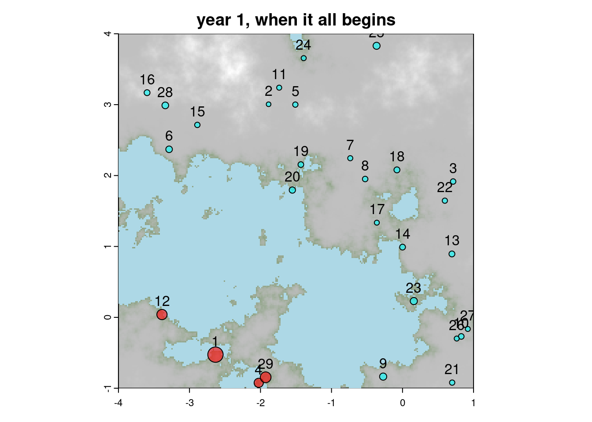
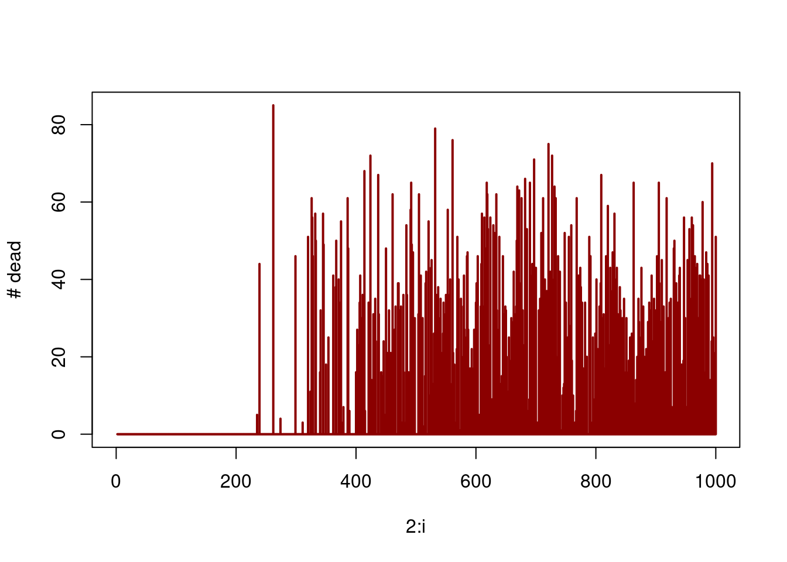
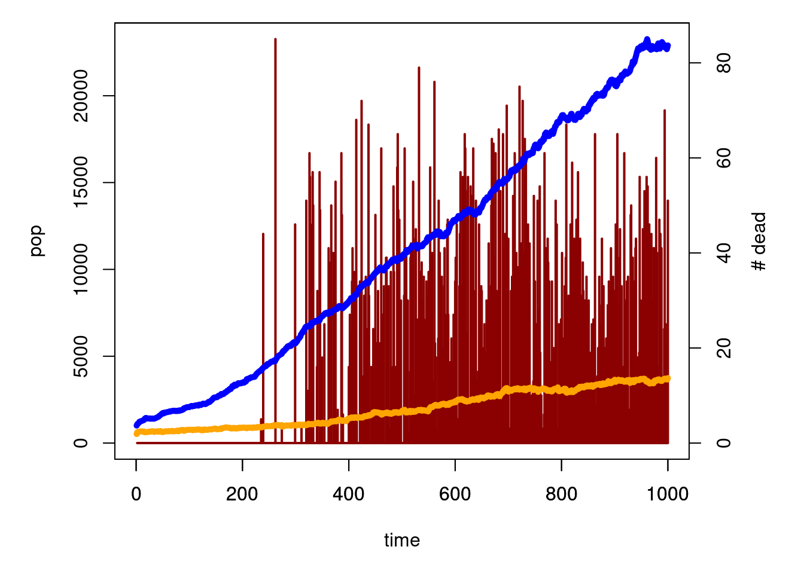
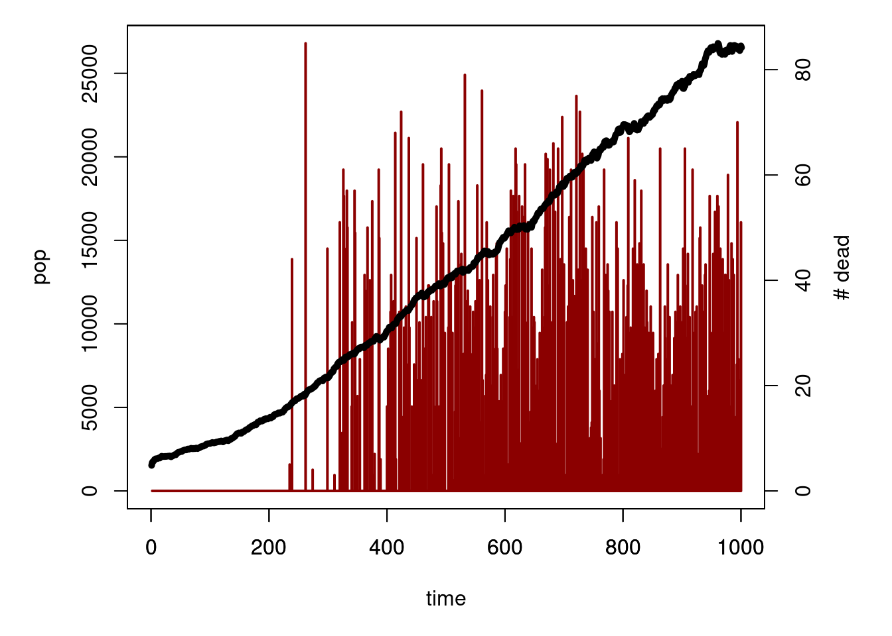
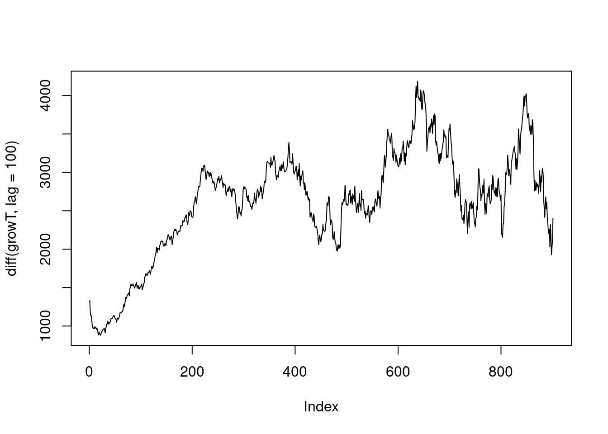

6 Final Choice and simulation
As I (simon) am stupid I didn’t generate seeds for each experiment so we cannot re-run it EXACTLY the same. But I kept lot of informations and output about it.
They are stored in the folder general_results_selected_simu/
and will allow us to reconstruct most of what happened. We basically run thousands of simulations and choose the one who looked the cool 😆. We used the script scriptmini.R that allow to run one simulation and ran in in parallel as described in smallscript.md.
What scriptmini.R doesn basically is
- We first load the maps and the sites:
- run one simulation
ts=1000
expname="basar"
print(paste0("Starting simulation ",expname))
onesimu=run_simulation (
sites=sites,
viable=viable,
dem=height.ras,
ressources=rast("data_original/resources.tiff"),
water=height.wat,
foldervid=expname,
visu=F,visumin=TRUE,
ts=ts,#length of simulation in year
Kbase=c("HG"=35,"F"=110),#difference in K for the two cultures
cul_ext=c("HG"=7,"F"=6),#spatial penality to extent: lower, bigger penality
penal_cul=c("HG"=4,"F"=5),#penality of occupational area: low, other sites can cam close
prob_birth=c("HG"=0.3,"F"=0.5),#proba to give birth every year
prob_survive=c("HG"=0.8,"F"=0.65),#proba to die when pop > K
prob_split=c("HG"=.5,"F"=.6),#proba to create new settlement when Ne > K
minimals=c("HG"=.14,"F"=.20),#how big the group of migrant should be to create a new city vs migrate to a existing one
bufferatack=300,#distance max around which settlement can fight
prob_move=c("HG"=0.2,"F"=0.1) #proba to migrate to existing settlement when Ne > K
)- generate a few output, including a video that helps to select the good simulation, these things are also do by
scriptmini.R:
Nts=onesimu$Nts
warcasualties=onesimu$warcasualties
sites=onesimu$sites
i=min(ts,which(apply(Nts,1,sum)==0))
pdf(paste0(expname,"_mapFinal.pdf"))
plotMap(height.ras,height.wat,paste0("year ",i))
plot(sites,cex=(as.integer(Nts[i,]>0)*0.3+Nts[i,]/200),pch=21,add=T,bg=rainbow(2,alpha=.6)[as.factor(sites$culture)])
text(sites)
dev.off()
pdf(paste0(expname,"growth_utils.pdf"))
plot(2:i,warcasualties[1:(i-1)],lwd=2,col="green",type="h",yaxt="n",ylab="",xlim=c(0,i))
axis(4)
par(new=T)
growF=apply(Nts[1:i,sites$culture=="F"],1,sum)
growHG=apply(Nts[1:i,sites$culture=="HG"],1,sum)
plot(growF,col="red",type="l",lwd=2,ylim=c(0,max(growF,growHG)),xlim=c(0,i))
points(growHG,col="blue",lwd=2,type="l")
dev.off()
pdf(paste0(expname,"growth_tot.pdf"))
plot(warcasualties[1:i-1],lwd=2,col="green",type="h",yaxt="n",ylab="")
axis(4)
par(new=T)
growT=apply(Nts[1:i,],1,sum)
plot(growT,col="black",type="l",lwd=2,ylim=c(0,max(growT)))
dev.off()Let’s redo that with the selected simulation:
onesimu=readRDS("data_original/general_results_selected_simu/buffattack300_K110_PSU065_3_all.RDS")
#Nts=readRDS("nts")
#warcasualties=readRDS("war")
#sites=terra::vect(readRDS("general_results_selected_simu/buffattack300_K110_PSU065_3_sitesRast.RDS"))
Nts=onesimu$Nts
warcasualties=onesimu$warcasualtiesPlot the sites at the beginning
# source("tools.R")
#expname="general_results_selected_simu/buffattack300_K110_PSU065_3"
#sites=vect(readRDS(paste0(expname,"_sitesRast.RDS")))
sites=vect("data_original/sitesinitialposition/")
height.ras=rast("data_original/east_narnia4x.tif")
height.wat=height.ras
height.wat[height.wat>mean(height.wat[])]=NA
i=1
plotMap(height.ras,height.wat,paste0("year ",i,", when it all begins"))
plot(sites,cex=(as.integer(Nts[1,]>0)*0.5+Nts[1,]/100),pch=21,add=T,bg=rainbow(2,alpha=.6)[as.factor(sites$culture)])
text(sites[Nts[1,]>0],pos=3)
We can look at the war and the number of deaths for each battle

Comparison to the total population growth of each culture
i=1000
par(mar=c(5,5,1,5))
plot(2:i,warcasualties[1:(i-1)],lwd=2,col="dark red",type="h",yaxt="n",ylab="",xlim=c(0,i),xlab="time")
axis(4)
mtext("# dead",4,2.5)
par(new=T)
growF=apply(Nts[1:i,sites$culture=="F"],1,sum)
growHG=apply(Nts[1:i,sites$culture=="HG"],1,sum)
plot(growF,col="orange",type="l",lwd=5,ylim=c(0,max(growF,growHG)),xlim=c(0,i),ylab="pop",xlab="")
points(growHG,col="blue",lwd=5,type="l")
If we look at the total population size, we can see how the clashes slowed down the population growth:
par(mar=c(5,5,1,5))
plot(2:i,warcasualties[1:(i-1)],lwd=2,col="dark red",type="h",yaxt="n",ylab="",xlim=c(0,i),xlab="time")
axis(4)
mtext("# dead",4,2.5)
par(new=T)
growT=apply(Nts,1,sum)
plot(growT,col="black",type="l",lwd=5,ylim=c(0,max(growT)),xlim=c(0,i),ylab="pop",xlab="")
This show if we looka at the growth rate:

Replaying all that will give this: